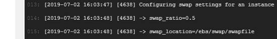
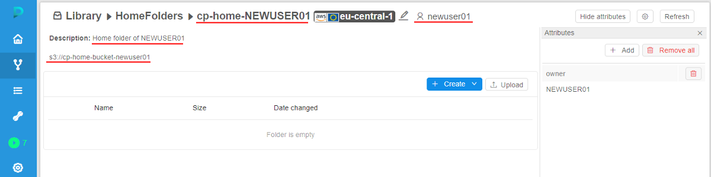
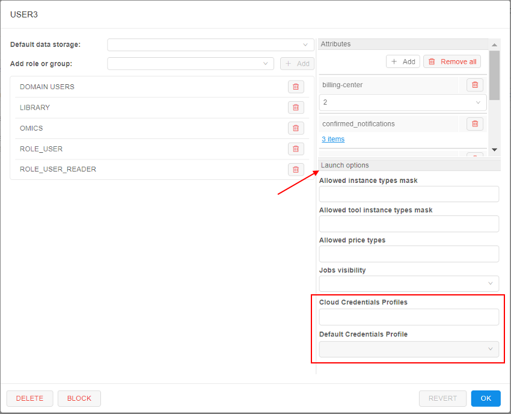
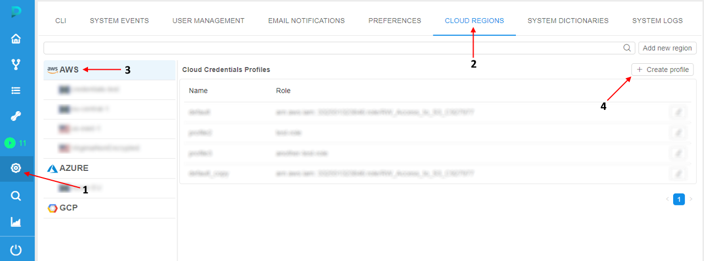
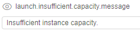

12.11. Advanced features via System Preferences
- Setup swap files for the Cloud VMs
- Home storage for each user
- Seamless authentication in the Cloud Provider
- Switching of regions for jobs in case of insufficient capacity
User shall have ROLE_ADMIN to configure system-level settings.
Setup swap files for the Cloud VMs
In certain cases jobs may fail with unexpected errors if the compute node runs Out of memory.
Admin users can configure a default swap file to the compute node being created. This allow to avoid runs failures due to memory limits.
To configure the size and the location of the swap:
- Open the Settings pop-up
- Click the Preference tab
- Select the Cluster section
- Click in the field under the
cluster.networks.configlabel

- Insert the similar
jsonblock into a region/cloud specific configuration:

Where:swap_ratio- defines a swap file size. It is equal the node RAM multiplied by that ratio. If ratio is 0, a swap file will not be created (default value: 0)swap_location- defines a location of the swap file. If that option is not set - default location will be used (default: AWS will useSSD/gp2EBS, Azure will use Temporary Storage)
- Click the Save button
- Click the OK button
- Now, while launch any pipeline, you can see specified swap settings in the run logs:
 - To check that settings were applied, open SSH session and input the
swaponcommand:

Home storage for each user
Cloud Pipeline allows creating home storages for the newly created users in automatic mode. It could be conveniently when multiple users are being created (otherwise this task can be really tedious - create each user/create storage for the user/grant permissions on the storage).
This behavior is controlled by the system preference storage.user.home.auto (Boolean, default value is false).
It controls whether the home storages shall be created automatically.
If it is set to true - new storage will be created for the user automatically simultaneously with the user creation. Also the just-created user is being granted OWNER permissions for the new storage. And the newly created storage is being set as a "default" storage in the user's profile.
The "home" storage automatic creation is being driven by a template. The template is being described as JSON element in the other system preference - storage.user.home.template.
In this preference for the template, being described:
- settings for the storage
- permissions on the storage
To different storage types there are different templates.
Object storage template
The template for object storages has the following view:
{
"datastorage": {
"name": "<storage_alias>",
"description": "<storage_description>",
"path": "<storage_path>",
"serviceType": "OBJECT_STORAGE",
"regionId": <region_ID>,
"parentFolderId": <parent_folder_ID>
},
"metadata": {
"owner": {
"value": "@@"
}
}
}
Where:
- "datastorage" sub-block defines settings of the creating storage:
<storage_alias>- storage name<storage_description>- storage description<storage_path>- full path to the storage<region_ID>- Cloud Region ID in which the storage will be created<parent_folder_ID>- the ID of the folder in the Library in which the storage will be located once the creation- "serviceType" - defines the type of the storage:
- "metadata" sub-block defines permissions on the created storage (the OWNER permissions):
@@- designation that will be automatic replaced with the username during the storage creation
Note: designation @@ should be used also in "datastorage" sub-block - to create storages with unique names and paths.
Example of the template for the object storage:
{
"datastorage": {
"name": "cp-home-@@",
"description": "Home storage of @@",
"path": "cp-home-storage-@@",
"serviceType": "OBJECT_STORAGE",
"regionId": 1,
"parentFolderId": 123
},
"metadata": {
"owner": {
"value": "@@"
}
}
}
FS storage template
The template for FS mounts has the following view:
{
"datastorage": {
"name": "<storage_alias>",
"description": "<storage_description>",
"path": "<storage_path>",
"serviceType": "FILE_SHARE",
"regionId": <region_ID>,
"parentFolderId": <parent_folder_ID>,
"fileShareMountId": <file_share_mount_ID>
},
"metadata": {
"owner": {
"value": "@@"
}
}
}
Where:
- "datastorage" sub-block defines settings of the creating FS mount:
<storage_alias>- FS mount's alias name<storage_description>- FS mount description<storage_path>- full path of the FS mount<region_ID>- Cloud Region ID in which the FS mount will be created<parent_folder_ID>- the ID of the folder in the Library in which the FS mount will be located once the creation- "serviceType" - defines the type of the storage
<file_share_mount_ID>- the ID of the share mount which will be used for the FS mount creation
- "metadata" sub-block defines permissions on the created FS mount (the OWNER permissions):
@@- designation that will be automatic replaced with username during the FS mount creation
Designation @@ should be used also in "datastorage" sub-block - to create FS mounts with unique names and paths.
Example of the template for the FS mount:
{
"datastorage": {
"name": "cp-home-@@",
"description": "Home storage of @@",
"path": "nfs://10.10.10.10:/home/@@",
"serviceType": "FILE_SHARE",
"regionId": 1,
"parentFolderId": 123,
"fileShareMountId": 10
},
"metadata": {
"owner": {
"value": "@@"
}
}
}
Usage example
- Open the System Preference.
- Find the preference
storage.user.home.autoand set the checkbox to "enabled". - Find the preference
storage.user.home.templateand fill in it suchlike as described above, e.g.:

- Click the Save button.
- Open the "USER MANAGEMENT" tab.
- Click the "+ Create user" button:

- In the appeared pop-up, specify the user name and click the Create button, e.g.:

- After the creation, find and open the card of the just-created user:

See that the default storage for the user is already set and has name and path according to the template (from step 3) - Close the user card.
- Open the library and navigate to the folder which ID was also specified in the template (from step 3):

See that the storage is already created and has name, path, description and the OWNER according to the template (from step 3) - Open the storage:

Additional notes
- If there were issues with the storage creation, the user creation doesn't fail too (but the system send a corresponding error message to the client).
- If the corresponding "home" storage already exists - the storage creation step will be skipped during the user creation. Default storage for the user isn't being set in that case. It can be set manually after the user creation.
- If the default storage is forcibly specified for the user before the creation - separate "home" storage will not be created independent to the value of
storage.user.home.autopreference.
Seamless authentication in Cloud Provider
Please note this functionality is currently available only for
AWS
Cloud Pipeline supports the seamless Cloud Provider authetication mechanism. It allows users to execute any request to the Cloud Provider’s API, from inside the Cloud Pipeline environment, without an authentication request.
The following mechanism automates the Cloud Provider authentication for the user’s scripts:
- Administrator is able to configure the user’s access permissions in the Cloud Pipeline account of the Cloud Provider or provide credentials for the external Cloud Provider account
- All the requests to the Cloud Provider authentication are handled by the certain Cloud Pipeline service, which authenticates the user with the configured credentials
- Users are able to use the Cloud Provider API without the authentication request
How to configure
Administrator can create specific interfaces - Cloud Credentials Profiles.
Each profile includes the following fields:
- Provider - to specify the Cloud Provider
- Name - to specify the profile name
- Assumed Role - to specify the role of the Cloud Provider that will be used for the authentication to the Cloud Provider API
- Policy - to specify the Cloud Provider policy of the objects access
Profiles management
To manage the Cloud Credentials Profiles, administrator should:
- Open the System Settings of the application
- Open the CLOUD REGIONS tab of the Settings
- Click the Cloud Provider label which Profiles shall be configured:
- The form of the Cloud Credentials Profiles management will be opened:

To create/edit a profile:
- Click the "+ Create profile" button in the right-upper corner
- In the appeared pop-up, fill in corresponding fields:
- After all fields are filled in, click the Create button to confirm creation:

- Just-created profile will appear in the list:
- To edit/remove a profile - click the button
 next to the profile name. Then perform desired actions
next to the profile name. Then perform desired actions
Profiles assigning
To leverage created profiles, administrator assigns them to User/Role/Group entity.
For each entity many profiles can be assigned.
Also, from the profiles assigned to the certain User/Role/Group the one can be selected as default - in such case, this profile will be used by default during the authentication operation in Cloud Provider. If the default profile for the certain User/Role/Group isn't selected - during the authentication operation there shall be selected which profile from the available ones should be used.
Profiles assigning can be performed via the USER MANAGEMENT (at the section "Launch options" of the certain User or Group/Role card).
For example, to assign profiles to a user administrator shall:
- Open the System Settings of the application
- Open the USER MANAGEMENT tab of the Settings
- Find the desired user and click it to open the user card, e.g.:

- Profiles assigning can be performed in the "Launch options" section:
 - Click the "Cloud Credential Profiles" dropdown list and select one or several profiles to assign, e.g.:

In this list, all profiles added as described above are available. - To select the profile which should be used as default - click the "Default Credential Profile" dropdown list and select the desired profile, e.g.:

Note: this action is optional - Click the OK button to save changes
For assigning profile to the Group/Role, similar actions should be performed in the corresponding cards
Profiles usage during the run
Now, we have Cloud Credentials Profiles (with their own Providers' roles and policies), we assigned them to the certain User/Role/Group.
How to allow their usage during the run?
It is being configured at the CLOUD REGIONS tab (for each Cloud Region separately).
There is a special field - "Mount Credentials Rule" with the following allowed values:
- NONE - for runs in this region, do not configure credentials
- SAME CLOUD - for runs in this region, configure credentials allowed for user of the same Cloud Provider only
- ALL - for runs in this region, configure all credentials allowed for user
Example:
Example: seamless authentication in AWS
In the example below, we will create the Profile with Read/Write access to AWS data storage (S3 bucket) and will access it from the run via AWS CLI directly.
- Open the System Settings
- Open the CLOUD REGIONS tab of the Settings
- Click the AWS label in the Cloud Provider list
- Click the "+ Create profile" button:
 - In the pop-up, specify the profile name, e.g.:
- In the pop-up, specify the
AWSrole you wish to use for the current profile (role shall be received from theAWSsupport), e.g.:

The role, used in our example, allows all operations withAWSbuckets (read/write) - In the pop-up, specify the policy you wish to use with the current profile, e.g.:
Please note although the role allows all operations with any bucket - we will restrict access to only one bucket - via the specified policy - Save the profile - click the Create button. The profile will appear in the list:

- Open the "USER MANAGEMENT" tab, find the user for whom you wish to use the created profile. Click the user tile
- Click the "Cloud Credentials Profiles" dropdown list and select the profile created at step 8:
- Click the "Default Credentials Profile" dropdown list and select the profile selected at step 10:

- Save changes:
- Open the CLOUD REGIONS tab of the Settings
- Click the
AWSCloud Region from which the run will be launched - Click the "Mount credentials rule" dropdown list and select the item "Same cloud":

- Save changes
- Launch the tool (in our example, we will use
library/ubuntu) from the user you assigned the profile at steps 10-11, e.g.:

- Open the Run logs page of the just launched tool
- Wait until the SSH hyperlink appears. Click it:

- In the opened web-terminal, perform the command
pip install awsclito installAWSCLI. Then check that installation is successful:

- Now, you can use
AWSCLI directly to the bucket specified at the Profile policy (at step 7) without extra-authentication.
For example, list the content:

Upload a file to the bucket:
Download a file from the bucket:

- But if you try to get access to the existing object on which the policy (specified at step 7) doesn't allow access - you will be rejected, e.g.:
Switching of Cloud Regions for launched jobs in case of insufficient capacity
Please note this functionality is currently available only for
AWS
If there are not enough instances of specified type to launch a run in one region - Cloud Pipeline can automatically try to launch identical instance in other region(s) of the same Cloud Provider.
This behaviour is defined by the special Cloud Region setting - "Run shift policy":

The switching region procedure looks like:
- User launches a job.
If during the run initialization, an instance requested by user is missing due toInsufficientInstanceCapacityerror (that means run failed with insufficient capacity in the selected region) - next steps below will be performed:
Note: the displayed text for this error can be configured by admin via the System preferencelaunch.insufficient.capacity.message
 - Possibility to switch the current region is checking - option "Run shift policy" shall be previously enabled:
- Possibility to switch to any vacant region from the same Cloud Provider is checking - option "Run shift policy" shall be previously enabled for the vacant region, e.g.:
- Current run is being automatically stopped.
InsufficientInstanceCapacityerror is displayed at the Run logs page as the failure reason:
- A new run is being automatically launched - in the vacant Cloud Region. You can view info about that new run in the tile at the Run logs page of the original run.
Also, the taskRestartPipelineRunappears for the original run - in its logs, the information about shifting run is displayed as well:

- At the Run logs page of the switched (new) run, there is also a link to the original run:
- If a new instance is not available with a new region - steps 1-5 will be performed in one more region as long as there are regions of the same Cloud Provider with the enabled option "Run shift policy".
Restrictions of this feature:
- available only for on-demand runs
- available only for runs that have not any Cloud dependent parameters (parameter is Cloud dependent if it, for example, contains some storage path)
- not supported for worker or cluster runs
For a run that does not meet these restrictions - in case of
InsufficientInstanceCapacityerror, original run will be just terminated during the region's shifting process initialization.
New run in any other region will not be launched. The reason of the failure will be shown in theRestartPipelineRuntask logs, e.g. for a cluster run shifting attempt: